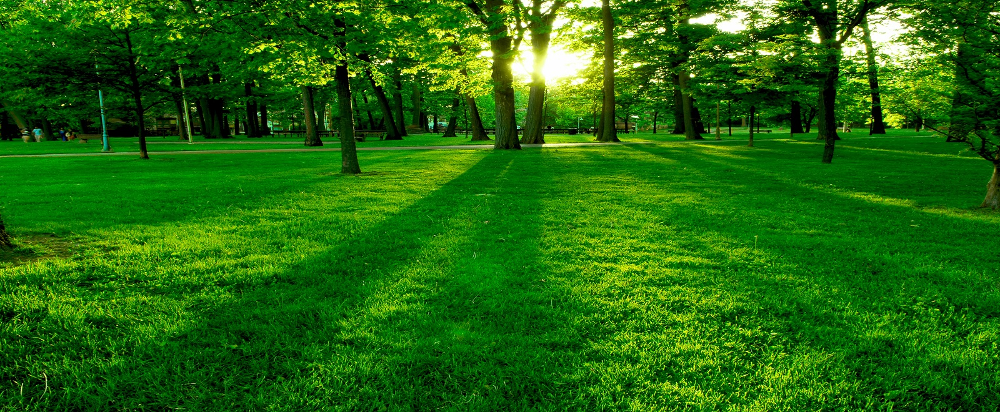
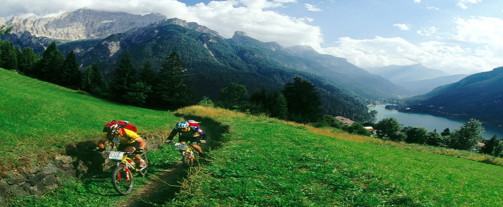
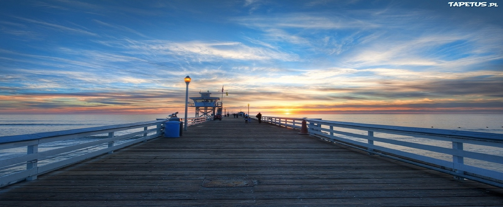

-

-

-
-

-

Zdrowe odżywianie - sposób odżywiania, polegający na przyjmowaniu substancji korzystnych dla zdrowia w celu zapewnienia lub poprawy zdrowia. Istotne jest zmniejszenie ryzyka wystąpienia chorób takich jak otyłość, nowotwory, choroby serca. Zdrowa dieta polega na przyjmowaniu odpowiednich ilości niezbędnych składników odżywczych i wody. Składniki pokarmowe mogą być dostarczane w postaci różnych produktów, dlatego wiele sposobów odżywiania i diet może być uznane za zdrowe.
Bieganie to najprostsza, najbardziej naturalna forma ruchu dla zdrowia. Daje najlepsze rezultaty i - co najważniejsze - niewiele kosztuje. Dzięki joggingowi zmniejszysz ryzyko chorób serca i układu krążenia, schudniesz, wymodelujesz sylwetkę, ale też poprawisz inteligencję i wygląd skóry.
Jazda na rowerze to bez wątpienia forma aktywności ruchowej, której uprawianie jest wyjątkowo przyjemne. Zużywając tyle samo energii, poruszamy się kilkakrotnie szybciej niż podczas marszu. Możemy decydować o nakładzie sił, robić dłuższe i krótsze wycieczki, wyznaczać sobie postoje (np. na piknik w malowniczym miejscu) i przez cały czas cieszyć się kontaktem z naturą oraz otaczającym nas krajobrazem. Wysiłek i wypoczynek możemy dozować indywidualnie, zgodnie z naszymi chęciami i możliwościami. Już 20 minut jazdy na rowerze może pobudzić krążenie.
Długotrwały brak odpoczynku znacząco osłabia siły obronne organizmu, prowadzi do wyczerpania i zwiększa ryzyko wystąpienia infekcji bakteryjnych. Dlatego przez cały rok powinniśmy zapewnić sobie 7-8 godzin snu na dobę oraz nauczyć się odpoczywać.
Masz z czymś problem, nie wiesz jak zdrowo i dobrze żyć? Napisz do mnie a napewno postaram się tobie pomóc.